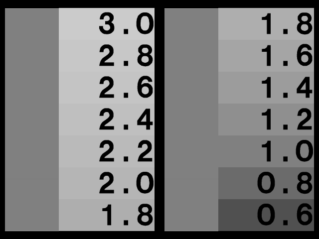
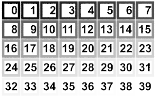
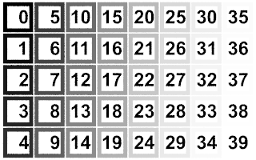
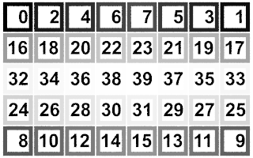
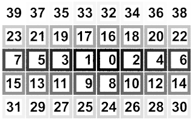
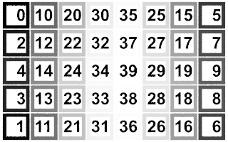
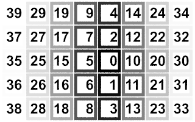
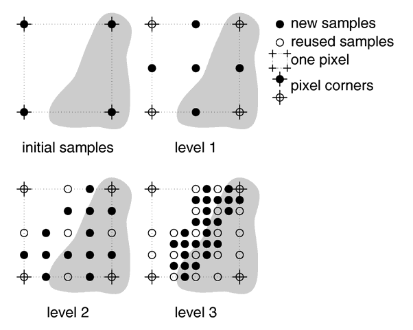

| POV-Ray for Unix version 3.8 | ||||
|
|
||||
| Home | POV-Ray for Unix | POV-Ray Tutorial | POV-Ray Reference | |
This section describes the command line switches and INI file keywords that are used to set the options of POV-Ray. It is supposed to be used as a reference for looking up things. It does not contain detailed explanations on how scenes are written or how POV-Ray is used. It just explains all features, their syntax, applications, limits, drawbacks, etc.
Options may be specified by switches or INI-style options. Almost all INI-style options have equivalent + / - switches and most switches have equivalent INI-style option. The following sections give a detailed description of each POV-Ray option. It includes both the INI-style settings and the + / - switches.
The notation and terminology used is described in the tables below.
Keyword=bool |
Turn Keyword on if bool equals true,
yes, on or 1 and Turn it off if it is any
other value. |
Keyword=true |
Do this option if true, yes, on
or 1 is specified. |
Keyword=false |
Do this option if false, no,
off or 0 is specified. |
Keyword=filename |
Set Keyword to filename where filename is any valid file
name.
Note: Some options prohibit the use of any of the above |
| n | Any integer such as in +W320 |
| n.n | Any float such as in Clock=3.45 |
| 0.n | Any float < 1.0 even if it has no leading 0 |
| s | Any string of text |
| x or y | Any single character |
| path | Any directory name, drive optional, no final path separator ("\" or "/", depending on the operating system) |
Unless otherwise specifically noted, you may assume that either a plus or minus sign before a switch will produce the same results.
Internal animation loop, automatic output file name numbering and the ability to shell out to the operating system to external utilities which can assemble individual frames into an animation, greatly improved the animation capability. The internal animation loop is simple yet flexible. You may still use external programs or batch files to create animations without the internal loop.
Clock=n.n |
Sets clock float identifier to n.n |
+Kn.n |
Same as Clock=n.n |
The Clock=n.n option or the
+Kn.n switch may be used to pass a single float value to the
program for basic animation. The value is stored in the float identifier
clock. If an object had a rotate <0,clock,0>
attached then you could rotate the object by different amounts over different
frames by setting +K10.0,+K20.0... etc. on
successive renderings. It is up to the user to repeatedly invoke POV-Ray with
a different Clock value and a different
Output_File_Name for each frame.
Initial_Frame=n | Sets initial frame number to n |
Final_Frame=n | Sets final frame number to n |
Initial_Clock=n.n | Sets initial clock value to n.n |
Final_Clock=n.n | Sets final clock value to n.n |
+KFIn | Same as Initial_Frame=n |
+KFFn | Same as Final_Frame=n |
+KIn.n | Same as Initial_Clock=n.n |
+KFn.n |
Same as Final_Clock=n.n |
The internal animation loop relieves the user of the
task of generating complicated sets of batch files to invoke POV-Ray multiple
times with different settings. While the multitude of options may look
intimidating, the clever set of default values means that you will probably
only need to specify the Final_Frame=n or the
+KFFn option to specify the number of frames. All other
values may remain at their defaults.
Any Final_Frame setting other than -1 will trigger POV-Ray's internal animation loop. For example Final_Frame=10 or +KFF10 causes POV-Ray to render your scene 10 times. If you specified Output_File_Name=file.tga then each frame would be output as file01.tga, file02.tga, file03.tga etc. The number of zero-padded digits in the file name depends upon the final frame number. For example +KFF100 would generate file001.tga through file100.tga. The frame number may encroach upon the file name. On MS-DOS with an eight character limit, myscene.pov would render to mysce001.tga through
mysce100.tga.
The default Initial_Frame=1 will probably never have to be
changed. You would only change it if you were assembling a long animation
sequence in pieces. One scene might run from frame 1 to 50 and the next from
51 to 100. The Initial_Frame=n or
+KFIn option is for this purpose.
Note: If you wish to render a subset of frames such as 30 through 40 out
of a 1 to 100 animation, you should not change Initial_Frame or
Final_Frame. Instead you should use the subset commands
described in section Subsets of Animation Frames.
Unlike some animation packages, the action in POV-Ray animated scenes does
not depend upon the integer frame numbers. Rather you should design your
scenes based upon the float identifier clock. By default, the clock value is 0.0 for the initial frame and 1.0 for the final frame. All other frames are interpolated between these values. For example if your object is supposed to rotate one full turn over the course of the animation, you could specify rotate 360*clock*y. Then as clock runs from 0.0 to 1.0, the object rotates about the y-axis from 0 to 360 degrees.
The major advantage of this system is that you can render a 10 frame animation or a 100 frame or 500 frame or 329 frame animation yet you still get one full 360 degree rotation. Test renders of a few frames work exactly like final renders of many frames.
In effect you define the motion over a continuous float valued parameter (the clock) and you take discrete samples at some fixed intervals (the frames). If you take a movie or video tape of a real scene it works the same way. An object's actual motion depends only on time. It does not depend on the frame rate of your camera.
Many users have already created scenes for POV-Ray 2 that expect clock
values over a range other than the default 0.0 to 1.0. For this reason we
provide the Initial_Clock=n.n
or +KIn.n and Final_Clock=n.n
or +KFn.n options. For example to run the clock from 25.0 to
75.0 you would specify Initial_Clock=25.0 and Final_Clock=75.0.
Then the clock would be set to 25.0 for the initial frame and 75.0 for the final frame.
In-between frames would have clock values interpolated from 25.0 through 75.0 proportionally.
Users who are accustomed to using frame numbers rather than clock values
could specify Initial_Clock=1.0 and Final_Clock=10.0
and Frame_Final=10 for a 10 frame animation.
For new scenes, we recommend you do not change the
Initial_Clock or Final_Clock from their default 0.0 to
1.0 values. If you want the clock to vary over a different range than the
default 0.0 to 1.0, we recommend you handle this inside your scene file as
follows...
#declare Start = 25.0; #declare End = 75.0; #declare My_Clock = Start+(End-Start)*clock;
Then use My_Clock in the scene description. This keeps the
critical values 25.0 and 75.0 in your .pov file.
Note: Details concerning the inner workings of the animation loop are in the section on shell-out operating system commands in section Shell-out to Operating System.
Subset_Start_Frame=n |
Set subset starting frame to n |
Subset_Start_Frame=0.n |
Set subset starting frame to n percent |
Subset_End_Frame=n |
Set subset ending frame to n |
Subset_End_Frame=0.n |
Set subset ending frame to n percent |
Frame_Step=n |
Set the increment to the frame number, default to 1 |
+SF0.n |
Same as Subset_Start_Frame |
+EF0.n |
Same as Subset_End_Frame |
+STPn |
Same as Frame_Step |
When creating a long animation, it may be handy to render only a portion
of the animation to see what it looks like. Suppose you have 100 frames but
only want to render frames 30 through 40. If you set Initial_Frame=30
and Final_Frame=40 then the clock would vary from 0.0 to 1.0 from
frames 30 through 40 rather than 0.30 through 0.40 as it should. Therefore
you should leave Initial_Frame=1 and Final_Frame=100
and use Subset_Start_Frame=30 and Subset_End_Frame=40
to selectively render part of the scene. POV-Ray will then properly compute the
clock values.
Similarly, if you only want to render a tenth of the frames, you can use Frame_Step=10 to jump over the nine non-rendered frames between the rendered frames. This option was inspired from megapov, but with two restrictions: only positive step value are supported (forward, no backward rendering) and the value is not available in the SDL
Usually you will specify the subset using the actual integer frame numbers
however an alternate form of the subset commands takes a float value in the
range 0.0 <=n.nnn <=1.0 which is interpreted as a fraction of
the whole animation. For example, Subset_Start_Frame=0.333 and
Subset_End_Frame=0.667 would render the middle 1/3rd of a
sequence regardless of the number of frames.
Cyclic_Animation=bool |
Turn cyclic animation on/off |
+KC |
Turn cyclic animation on |
-KC |
Turn cyclic animation off |
Many computer animation sequences are designed to be run in a continuous
loop. Suppose you have an object that rotates exactly 360 degrees over the
course of your animation and you did rotate 360*clock*y to do
so. Both the first and last frames would be identical. Upon playback there
would be a brief one frame jerkiness. To eliminate this problem you need to
adjust the clock so that the last frame does not match the first. For example
a ten frame cyclic animation should not use clock 0.0 to 1.0. It should run
from 0.0 to 0.9 in 0.1 increments. However if you change to 20 frames it
should run from 0.0 to 0.95 in 0.05 increments. This complicates things
because you would have to change the final clock value every time you changed
Final_Frame. Setting Cyclic_Animation=on or using
+KC will cause POV-Ray to automatically adjust the final clock
value for cyclic animation regardless of how many total frames. The default
value for this setting is off.
Note: Change these items are deprecated as of version 3.7
Field_Render=bool |
Turn field rendering on/off |
Odd_Field=bool |
Set odd field flag |
+UF |
Turn field rendering on |
-UF |
Turn field rendering off |
+UO |
Set odd field flag on |
-UO |
Set odd field flag off |
Field rendering is sometimes used for animations when the animation is being output for television. TVs only display alternate scan lines on each vertical refresh. When each frame is being displayed the fields are interlaced to give the impression of a higher resolution image. The even scan lines make up the even field, and are drawn first (i.e. scan lines 0, 2, 4, etc.), followed by the odd field, made up of the odd numbered scan lines are drawn afterwards. If objects in an animation are moving quickly, their position can change noticeably from one field to the next. As a result, it may be desirable in these cases to have POV-Ray render alternate fields at the actual field rate (which is twice the frame rate), rather than rendering full frames at the normal frame rate. This would save a great deal of time compared to rendering the entire animation at twice the frame rate, and then only using half of each frame.
By default, field rendering is not used. Setting
Field_Render=on or using +UF will cause alternate frames
in an animation to be only the even or odd fields of an animation. By
default, the first frame is the even field, followed by the odd field. You
can have POV-Ray render the odd field first by specifying
Odd_Field=on, or by using the +UO switch.
Height=n |
Sets screen height to n pixels |
Width=n |
Sets screen width to n pixels |
+Hn |
Same as Height=n |
+Wn |
Same as Width=n |
These switches set the height and width of the image in pixels. This specifies the image size for file output. The preview display, if on, will generally attempt to pick a video mode to accommodate this size but the display settings do not in any way affect the resulting file output.
Max_Image_Buffer_Memory=n |
Sets the allowable size of the output image cache |
+MIn |
Same as Max_Image_Buffer_Memory=n |
This INI parameter sets the number of megabytes of RAM to allow for output image caching. If the output image happens to use more than this, a file backed temporary image is used instead. If using this option you must specify a value. This option is on by default and its value is 128.
Start_Column=n |
Set first column to n pixels |
Start_Column=0.n |
Set first column to n percent of width |
+SCn |
Same as Start_Column=n |
+SC0.n |
Same as Start_Column=0.n |
Start_Row=n |
Set first row to n pixels |
Start_Row=0.n |
Set first row to n percent of height |
+SRn |
Same as Start_Row=n |
+SR0.n |
Same as Start_Row=0.n |
End_Column=n |
Set last column to n pixels |
End_Column=0.n |
Set last column to n percent of width |
+ECn |
Same as End_Column=n |
+EC0.n |
Same as End_Column=0.n |
End_Row=n |
Set last row to n pixels |
End_Row=0.n |
Set last row to n percent of height |
+ERn |
Same as End_Row=n |
+ER0.n |
Same as End_Row=0.n |
When doing test rendering it is often convenient to define a small, rectangular sub-section of the whole screen so you can quickly check out one area of the image. The Start_Row, End_Row, Start_Column and End_Column options allow you to define the subset area to be rendered. The default values are the full size of the
image from (1,1) which is the upper left to (w,h) on the lower right where w and h are the Width=n and Height=n values you have set.
Note: If the number specified is greater than 1 then it is interpreted as an absolute row or column number in pixels. If it is a decimal value between 0.0 and 1.0 then it is interpreted as a percent of the total width or height of the image.
For example: Start_Row=0.75 and Start_Column=0.75 starts on a row 75% down from the top at a column 75% from the left. Thus it renders only the lower-right 25% of the image regardless of the specified width and height.
The +SR, +ER, +SC and +EC switches work in the same way as the corresponding INI-style settings for both absolute settings or percentages.
Note: Early versions of POV-Ray allowed only start and end rows to be specified with +Sn and +En. In version 3.7 support for those variants has been dropped.
When rendering a subset of columns (+sc/+ec) and/or rows (+sr/+er), POV-Ray generates a full width image and fills the not rendered columns with black pixels. This should not be a problem for any image reading program no matter what file format is used. Earlier versions of POV-Ray had problems when a subset of rows (+sr/+er) was rendered. The full height information was written into the image file header but it only wrote image data for those lines that were actually rendered. This made output files that were incompatible with various image processing tools. In version 3.7 this is no longer the case.
Note: Change these items are deprecated as of version 3.7
Test_Abort=bool |
Turn test for user abort on/off |
+X |
Turn test abort on |
-X |
Turn test abort off |
Test_Abort_Count=n |
Set to test for abort every n pixels |
+Xn |
Set to test for abort every n pixels on |
-Xn |
Set to test for abort off (in future test every n pixels) |
On some operating systems once you start a rendering you must let it
finish. The Test_Abort=on option or +X switch
causes POV-Ray to test the keyboard for keypress. If you have pressed a key,
it will generate a controlled user abort. Files will be flushed and closed
but only data through the last full row of pixels is saved. POV-Ray exits
with an error code 2 (normally POV-Ray returns 0 for a successful run or 1
for a fatal error).
When this option is on, the keyboard is polled on every line while parsing
the scene file and on every pixel while rendering. Because polling the
keyboard can slow down a rendering, the
Test_Abort_Count=n option or +Xn switch
causes the test to be performed only every n pixels rendered or
scene lines parsed.
Continue_Trace=bool |
Sets continued trace on/off |
+C |
Sets continued trace on |
-C |
Sets continued trace off |
Create_Continue_Trace_Log=bool |
Save state information in file on/off |
+CC |
Save state information in file on |
-CC |
Save state information in file off |
Create_Ini=file |
Generate an INI file to file |
Create_Ini=true |
Generate file.ini where file is scene name. |
Create_Ini=false |
Turn off generation of previously set file.ini |
+GIfile |
Same as Create_Ini=file |
If you abort a render while it is in progress or if you used the End_Row option to end the render prematurely, you can use Continue_Trace=on or +C option to continue the render later at the point where you left off. This option reads in the previously generated output file, displays the partial image rendered so far, then proceeds with the ray-tracing. The state or continue trace information file must exist for the Continue_Trace=true / +C option to work.
The Continue_Trace option may not work if the Start_Row option has been set to anything but the top of the file, depending on the output format being used. Also POV-Ray cannot continue the file once it has been opened and saved again by any program.
POV-Ray tries to figure out where to resume an interrupted trace by reading any previously generated data in the specified output file. All file formats contain the image size, so this will override any image size settings
specified. Some file formats (namely TGA and PNG) also store information about where the file started (i. e. +SCn and +SRn options), alpha output +UA, and bit-depth
+FNn, which will override these settings. It is up to the user to make sure that all other options are set the same as the original render.
New as of version 3.8 the Create_Continue_Trace_Log option was added to offer greater resource control. The user can suppress the creation of this file by simply setting the ini-option Create_Continue_Trace_Log=false or using the -CC command line option.
The Create_Ini option or +GI switch provides an easy way to create an INI file with all of the rendering options, so you can re-run files with the same options, or ensure you have all the same options when resuming. This option creates an INI file with every option set at the value used for that rendering. This includes default values which you have not specified. For example if you run POV-Ray with...
POVRAY +Isimple.pov MYOPTS +GIrerun.ini MOREOPTS
POV-Ray will create a file called rerun.ini with all of the options used to generate this scene. The file is not written until all options have been processed. This means that in the above example, the file
will include options from both myopts.ini and moreopts.ini despite the fact that the +GI switch is specified between them. You may now re-run the scene with...
POVRAY RERUN
or resume an interrupted trace with
POVRAY RERUN +C
If you add other switches with the rerun.ini reference, they will be included in future re-runs because the file is re-written every time you use it.
The Create_Ini option is also useful for documenting how a scene was rendered. If you render waycool.pov with Create_Ini=on then it will create a file waycool.ini that
you could distribute along with your scene file so other users can exactly re-create your image.
Display=bool |
Turns graphic display on/off |
+D |
Turns graphic display on |
-D |
Turns graphic display off |
Video_Mode=x |
Set video mode to x; does not affect on/off. Change deprecated as of version 3.7 |
+Dx |
Set display on; Set mode to x. Change deprecated as of version 3.7 |
-Dx |
Set display off; but for future use mode x. Change deprecated as of version 3.7 |
Palette=y |
Set display palette to y; does not affect on/off. Change deprecated as of version 3.7 |
+Dxy |
Set display on; Set mode x; Set palette y. Change deprecated as of version 3.7 |
-Dxy |
Set display off; use mode x, palette y in future. Change deprecated as of version 3.7 |
Display_Gamma=n.n |
Sets the display gamma to n.n |
Display_Gamma=sRGB |
Sets the display gamma to match the sRGB standard (approximately corresponding to a gamma of 2.2) |
Display_Gamma=BT709 |
Sets the display gamma to match the ITU-R BT.709 transfer function. New in version 3.8 |
Display_Gamma=BT2020 |
Sets the display gamma to match the ITU-R BT.2020 transfer function. New in version 3.8 |
The Display=on or +D switch will turn on the graphics display of the image while it is being rendered. Even on some non-graphics systems, POV-Ray may display an 80 by 24 character ASCII-Art version of your image. Where available, the display may be full, 24-bit true color. Setting Display=off or using the -D switch will turn off the graphics display which is the default.
On the Windows platform, the default is Display=on. Turning display off does not, of course, turn off the actual video display. Instead, POV-Ray will not open the output window that it normally shows the render.
Note: Change the following two items are deprecated as of version 3.7
The Video_Mode=x option sets the display mode or hardware type chosen where x is a single digit or letter that is machine dependent. Generally Video_Mode=0 means the default or an auto-detected setting should be used. When using switches, this character immediately follows the switch. For example the +D0 switch will turn on the graphics display in the default mode.
The Palette=y option selects the palette to be used. Typically the single character parameter y is a digit which selects one of several fixed palettes or a letter such G for gray scale, H for 15-bit or 16-bit high color or T for 24-bit true color. When using switches, this character is the 2nd character after the switch. For example the +D0T switch will turn on the graphics display in the default mode with a true color palette.
Note: Change the previous two items are deprecated as of version 3.7
The Display_Gamma setting overcomes the problem of images (whether ray-traced or not) having different brightness when being displayed on different monitors, different video cards, and under different operating systems. The Display_Gamma=n.n setting is not available as a command-line switch.
Note: The Display_Gamma is a setting based on your computer's display hardware, and should be set correctly once and not changed.
While the Display_Gamma can be different for each system, there are a few general rules that can be used for setting Display_Gamma if you do not know it exactly. If the Display_Gamma keyword does not appear in the INI file, POV-Ray assumes that the display gamma is approximately 2.2, a value that matches the sRGB standard. This is because most PC monitors have a gamma value in the range 1.6 to 2.6, however, newer models seem to have a lower gamma value. Mac has the ability to do gamma correction inside the system software, based on a user setting in the gamma control panel. If the gamma control panel is turned off, or is not available, the default Macintosh system gamma is 1.8. Many newer PC graphics cards can do hardware gamma correction and should use the current Display_Gamma setting, usually sRGB being the approximate equivalent to a gamma of 2.2.
Note: Display_Gamma=BT709 and Display_Gamma=BT2020 are provided more for the sake of completeness than anything else. If you think one of these values is right for you, chances are you're doing something fundamentally wrong.
The following gamma test image can be used to help you set your Display_Gamma
accurately.
Before viewing the gamma image darken the room and set the monitor brightness and contrast to maximum. While viewing a black screen, lower the brightness gradually until the background is no longer noticeable (ie when it just fades from view). This may be difficult on monitors that use overscanning, unless you change the viewable area settings.
|  |
|
Display gamma test image. |
Now, lower the contrast until the alternating white and black bars on the left edge of each column are equal in width. This is trying to get a 50% gray by using half white and half black. If this is not possible, choose a contrast setting which is about in the middle. While viewing the image from a distance, or with squinted eyes, one of the numbered swatches will best match the gray value approximated by the white and black bars. The number in this swatch is your display's actual gamma value.
Normal display gamma values are in the range 2.0 to 2.6. If your monitor is usually used in a dim environment, we often use a gamma value that is 15% - 25% lower than the actual display gamma to give the images more contrast. Some systems, such as Macs and SGIs, already do gamma correction, so they may have display gammas of 1.0 or 1.8.
See the Gamma Handling tutorial for additional information about setting up your display and why gamma handling is so important.
Pause_When_Done=bool |
Sets pause when done on/off |
+P |
Sets pause when done on |
-P |
Sets pause when done off |
Verbose=bool |
Set verbose messages on/off |
+V |
Set verbose messages on |
-V |
Set verbose messages off |
Draw_Vistas=bool |
Turn draw vistas on/off |
+UD |
Turn draw vistas on |
-UD |
Turn draw vistas off |
On some systems, when the image is complete, the graphics display is
cleared and POV-Ray switches back into text mode to print the final
statistics and to exit. Normally when the graphics display is on, you want to
look at the image awhile before continuing. Using Pause_When_Done=on
or +P causes POV-Ray to pause in graphics mode until you press a key
to continue. The default is not to pause (-P).
When the graphics display is not used, it is often desirable to monitor
progress of the rendering. Using Verbose=on or +V
turns on verbose reporting of your rendering progress. This reports the
number of the line currently being rendered, the elapsed time for the current
frame and other information. On some systems, this textual information can
conflict with the graphics display. You may need to turn this off when the
display is on. The default setting is off (-V).
Note:
Starting with version 3.7 the Draw_Vistas option has been deprecated. See
the section Automatic Bounding Control for more details.
Preview_Start_Size=n |
Set mosaic preview start size to n |
+SPn |
Same as Preview_Start_Size=n |
Preview_End_Size=n |
Set mosaic preview end size to n |
+EPn |
Same as Preview_End_Size=n |
Typically, while you are developing a scene, you will do many low resolution test renders to see if objects are placed properly. Often this low resolution version does not give you sufficient detail and you have to render the scene again at a higher resolution. A feature called mosaic preview solves this problem by automatically rendering your image in several passes.
The early passes paint a rough overview of the entire image using large blocks of pixels that look like mosaic tiles. The image is then refined using higher resolutions on subsequent passes. This display method very quickly displays the entire image at a low resolution, letting you look for any major problems with the scene. As it refines the image, you can concentrate on more details, like shadows and textures. You do not have to wait for a full resolution render to find problems, since you can interrupt the rendering early and fix the scene, or if things look good, you can let it continue and render the scene at high quality and resolution.
To use this feature you should first select a Width and
Height value that is the highest resolution you will need. Mosaic
preview is enabled by specifying how big the mosaic blocks will be on the
first pass using Preview_Start_Size=n or
+SPn. The value n should be a number greater than zero that
is a power of two (1, 2, 4, 8, 16, 32, etc.) If it is not a power of two, the
nearest power of two less than n is substituted. This sets the size of the
squares, measured in pixels. A value of 16 will draw every 16th pixel as a
16*16 pixel square on the first pass. Subsequent passes will use half the
previous value (such as 8*8, 4*4 and so on.)
The process continues until it reaches 1*1 pixels or until it reaches the
size you set with Preview_End_Size=n or
+EPn. Again the value n should be a number greater than zero
that is a power of two and less than or equal to Preview_Start_Size. If it is not a power of two, the nearest power of
two less than n is substituted. The default ending value is 1. If you set
Preview_End_Size to a value greater than 1 the mosaic passes
will end before reaching 1*1, but POV-Ray will always finish with a 1*1. For
example, if you want a single 8*8 mosaic pass before rendering the final
image, set Preview_Start_Size=8 and
Preview_End_Size=8.
No file output is performed until the final 1*1 pass is reached. Although the preliminary passes render only as many pixels as needed, the 1*1 pass re-renders every pixel so that anti-aliasing and file output streams work properly. This makes the scene take up to 25% longer than the regular 1*1 pass to render, so it is suggested that mosaic preview not be used for final rendering. Also, the lack of file output until the final pass means that renderings which are interrupted before the 1*1 pass can not be resumed without starting over from the beginning.
Note: For performance reasons using a Preview_End_Size value thats less than 8 is not recommended. If you don't specify an end preview size the default +ep2 will be used.
Output_to_File=bool |
Sets file output on/off |
+F |
Sets file output on (use default type) |
-F |
Sets file output off |
By default, POV-Ray writes an image file to disk. When you are developing
a scene and doing test renders, the graphic preview may be sufficient. To
save time and disk activity you may turn file output off with
Output_to_File=off or -F.
Output_File_Type=x |
Sets file output format to x |
+Fxn |
Sets file output on; sets format x, depth n |
-Fxn |
Sets file output off; but in future use format x, depth n |
Output_Alpha=bool |
Sets alpha output on/off |
+UA |
Sets alpha output on |
-UA |
Sets alpha output off |
Bits_Per_Color=n |
Sets file output bits/color to n |
Compression=n |
Sets compression parameter for file types that support it. |
Note: As of version 3.7 the default output file type for all supported platforms is PNG. You may select one of several different file types by using Output_File_Type=x or +Fx where x is one of the following:
.. B |
Universal Bitmap image file format |
.. C |
Compressed Targa-24 format (RLE, run length encoded) |
.. E |
OpenEXR High Dynamic-Range format |
.. H |
Radiance High Dynamic-Range format |
.. J |
JPEG format (Note: This format is not loss-free and will generate compression artifacts) |
.. N |
PNG (portable network graphics) format |
.. P |
Unix PPM format |
.. S |
System-specific format: See the notation at the end of this section. |
.. T |
Uncompressed Targa-24 format |
New as of version 3.8, instead of Output_File_Type=C you can also use Output_File_Type=T Compression=1 to choose RLE-encoded Targa format.
PNG is an image format designed not only to replace GIF, but to improve on its shortcomings. PNG offers the highest compression available without loss for high quality applications, such as ray-tracing.
New Prior to version 3.8, PPM output always created the compact raw (binary) format. The Compression=0 ini setting can now be used to select the plain (ASCII) format instead.
The system specific format depends on the platform used and is covered in the appropriate system specific documentation.
JPEG is particularly good at achieving high compression rates with photographic or photorealistic images, making it one of the most frequently used formats on the Internet. However, it is not loss-free. Images generated with this option will always contain compression artifacts (image defects). If you need to keep a high-quality image you should render using one of the loss-free formats.
Note: Chroma sub-sampling has been disabled in JPEG output, and there has been a reduction in the default quality setting.
The JPEG compression quality can be controlled using the Compression ini file option which, if set, needs to be an integer between 0 and 100. If values of 0 or 1 are specified then the default compression quality setting of 85% is used. Otherwise the value specified (2-100) is used as the compression quality setting. A value of 2 produces the smallest file (maximum compression), but looks terrible. A value of 100 produces the largest file (least compression) but can still contain some compression artifacts. Values lower than 0 are clipped to 0. Values greater than 100 are clipped to 100.
Most of these formats output 24 bits per pixel with 8 bits for each of red,
green and blue data. PNG and PPM allow you to optionally specify the output bit
depth from 5 to 16 bits for each of the red, green, and blue colors, giving
from 15 to 48 bits of color information per pixel. The default output depth
for all formats is 8 bits/color (16 million possible colors), but this may be
changed for PNG and PPM format files by setting Bits_Per_Color=n
or by specifying +FNn or +FPn,
where n is the desired bit depth.
Specifying a smaller color depth like 5 bits/color (32768 colors) may be enough for people with 8- or 16-bit (256 or 65536 color) displays, and will improve compression of the PNG file. Higher bit depths like 10 or 12 may be useful for video or publishing applications, and 16 bits/color is good for grayscale height field output (See section Height Field for details on height fields).
Targa format also allows 8 bits of alpha transparency data to be output,
while PNG format allows 5 to 16 bits of alpha transparency data, depending on
the color bit depth as specified above. You may turn this option on with
Output_Alpha=on or +UA. The default is off or
-UA.
The alpha channel stores a transparency value for each pixel, just like there is also stored a value for red green and blue light for each pixel. In POV-Ray, when the alpha channel is turned on, all areas of the image where the background is partly or fully visible will be partly or fully transparent. Refractions of the background will also be transparent, but not reflections. Also anti-aliasing is taken into account
The philosophy of the alpha channel feature in POV-Ray is that the background color should not be present in the color of the image when the alpha channel is used. Instead, the amount of visible background is kept in the alpha and *only* in the alpha channel. That ensures that images look correct when viewed with the alpha channel.
See section Using the Alpha Channel for further details on using transparency in imagemaps in your scene.
Note: In version 3.7 alpha handling for image file output has changed. Effectively, the background now requires a filter or transmit value in order for alpha transparency to work properly.
Previous versions of POV-Ray always wrote associated alpha for output, this has been changed on a per-file-format basis as follows:
In addition to support for variable bit-depths, alpha channel, and grayscale
formats, PNG files also store the File_Gamma value so the
image displays properly on all systems.
The hf_gray_16 global setting, as described in section
HF_Gray_16 will also affect the
type of data written to the output file.
The Radiance Synthetic Imaging System or .hdr image format was originally developed to aid lighting designers and architects by predicting the light levels and appearance of a space prior to construction. The OpenEXR or .exr image file format was developed by Industrial Light & Magic™ for use in computer imaging applications.
Most image formats now include metadata (BMP is a notable exception). This metadata contains the POV-Ray version, render date/time (GMT), platform (e.g. x86_64-pc-win), and compiler used to build the POV-Ray executable.
Note: System-specific or type "s" output file format is being retained for legacy support reasons. Windows and Unix mapping remains the same, BMP and TGA respectively, however on Macintosh it has been changed to PNG, and a warning is issued when type "s" is used.
Output_File_Name=file |
Sets output file to file |
+Ofile |
Same as Output_File_Name=file |
The default output filename is created from the scene name and need not be
specified. The scene name is the input name with all drive, path, and
extension information stripped. For example if the input file name is
c:\povray3\mystuff\myfile.pov the scene name is myfile.
The proper extension is appended to the scene name based on the file type.
For example myfile.tga or myfile.png might be
used.
You may override the default output name using
Output_File_Name=file or +Ofile. For
example:
Input_File_Name=myinput.pov Output_File_Name=myoutput.tga
If an output file name of "-" is specified (a single minus sign), then the image will be written to standard output, usually the screen. The output can then be piped into another program or to a GUI if desired.
If the file specified is actually a path or directory or folder name and not a file name, then the default output name is used but it is written to the specified directory. For example:
Input_File_Name=myscene.pov Output_File_Name=c:\povray3\myimages\
This will create c:\povray3\myimages\myscene.png as the
output file.
The output-file buffer options Buffer_Output and Buffer_Size are removed per POV-Ray 3.6
Note: The options are still accepted, but ignored, in order to be backward compatible with old INI files.
Dither=bool |
Turns output file dithering on/off |
Dither_Method=xx |
Selects the output file dithering method, where xx is listed below: |
+/-THxx |
Command line equivalent |
B2..B4: Bayer pattern dithering using 2x2, 3x3 or 4x4 patterns, respectivelyD1: Simple 1-dimensional error diffusion ditheringD2: Simple 2-dimensional error diffusion dithering (needs extra memory for 2 pixel rows)FS: Floyd-Steinberg error diffusion dithering (needs extra memory for 2 pixel rows)The default is -THfs i.e: dithering is off, with Floyd-Steinberg being the default if only +TH is specified.
Dithering works for all file formats except JPEG (where dithering would be counter-productive) and OpenEXR (which provides sufficient precision to make dithering obsolete). These file formats simply ignore the setting.
Note: While dithering does help to reduce color banding, it may instead lead to artifacts in prints, due to interference with the printing device's own dithering algorithms; in that case, choosing a different dither method may help.
File_Gamma=x.x |
Sets output file gamma to n.n |
File_Gamma=sRGB |
Selects the sRGB transfer function instead of a power-law output file gamma |
File_Gamma=BT709 |
New in version 3.8, selects the ITU-R BT.709 transfer function instead of a power-law output file gamma |
File_Gamma=BT2020 |
New in version 3.8, selects the ITU-R BT.2020 transfer function instead of a power-law output file gamma |
File_Gamma setting specifies the target display gamma for which to pre-correct (typically a value in the range from 1.6 to around 2.5, with 2.2 being the most commonly used), and will have an influence on the brightness and saturation of the image when displayed.
Some other file formats do have a clearly specified gamma handling policy, but allow for gamma encoding with an arbitrary gamma value (currently only PNG). For such formats, File_Gamma specifies the decoding gamma or, in other words, the inverse of the encoding gamma to use, and will have no effect on the brightness and saturation of the image when displayed with contemporary software; the setting will however affect the likelihood of banding artifacts.
The parameter has no effect on file formats mandating linear storage of color values (currently OpenEXR and Radiance HDR).
Alternatively to a numeric value, sRGB can be specified, instructing POV-Ray to employ the sRGB transfer function, which is similar but not quite identical to a power-law gamma curve with a gamma of 2.2. sRGB is also the default on all platforms currently supported. New in version 3.8, BT709 or BT2020 can also be specified, instructing POV-Ray to employ the transfer function specified in ITU-R BT.709 or ITU-R BT.2020, respectively, which are similar but not quite identical to a power-law gamma curve with a gamma of roughly 1.9. When generating Netpbm PPM output, BT709 is the effective default.
Note: Specifying File_Gamma=BT709 or File_Gamma=BT2020 only affects the transfer function used. Specifically, it does not affect the digital representation of nominal black and white, which remain at 0 and 255 (presuming 8-bit encoding), respectively, as opposed to 16 and 235 for full-fledged ITU-R BT-709 encoding.
See also: Gamma in Output Images for additional information.
The CPU Utilization Histogram feature has been removed as of POV-Ray v3.7.
POV-Ray reads in your scene file and processes it to create an internal
model of your scene. The process is called parsing. As your file
is parsed other files may be read along the way. This section covers options
concerning what to parse, where to find it and what version specific
assumptions it should make while parsing it.
Declare=IDENTIFIER=FLOAT |
Declares an identifier with a float value |
You can now declare a constant in an INI file, and that constant will be available to the scene. Since INI file statements may also be laced on the command-line, you can therefore also declare on the command-line (though there is no switch for it).
Declare=MyValue=24
This would be the same as a #declare MyValue=24; in a scene file. The value on the
right-hand side must be a constant float value.
A possible use could be switching off radiosity or photons from command-line:
--in INI-file / on command-line
Declare=RAD=0
--in scenefile
global_settings {
#if (RAD)
radiosity {
...
}
#end
}
Include_Header=file |
Sets primary include file name to file |
+HIfile |
Same as Include_Header=file |
This option allows you to include a file as the first include file of a scene file. You can for example use this option to always include a specific set of default include files used by all your scenes.
Library_Path=path |
Add path to list of library paths |
+Lpath |
Same as Library_Path=path |
POV-Ray looks for files in the current directory. If it does not find a file it needs it looks in various other library directories which you specify. POV-Ray does not search your operating system path. It only searches the current directory and directories which you specify with this option. For example the standard include files are usually kept in one special directory. You tell POV-Ray to look there with...
Library_Path=c:\povray3\include
You must not specify any final path separators ("\" or "/") at the end.
Multiple uses of this option switch do not override previous settings. If you specify the exact same path twice it is only counted once. The current directory will be searched first followed by the indicated library directories in the order in which you specified them.
Version=n.n |
Set initial language compatibility to version n.n |
+MVn.n |
Same as Version=n.n |
As POV-Ray has evolved from version 1.0 through to today we have made every
effort to maintain some amount of backwards compatibility with earlier
versions. Some old or obsolete features can be handled directly without any
special consideration by the user. Some old or obsolete features can no
longer be handled at all. However some old features can still be
used if you warn POV-Ray that this is an older scene. In the POV-Ray scene
language you can use the #version directive to switch version
compatibility to different settings. See section The #version Directive
for more details about the language version directive.
Additionally you may use the Version=n.n option or the
+MVn.n switch to establish the initial
setting. For example one feature introduced in 2.0 that was incompatible with
any 1.0 scene files is the parsing of float expressions. Setting
Version=1.0 or using +MV1.0 turns off expression parsing
as well as many warning messages so that nearly all 1.0 files will still
work. Naturally the default setting for this option is the current version number.
The version directive and command-line setting no longer provide compatibility with most rendering bugs in versions prior to POV-Ray 3.5. However, compatibility with the scene language is provided for scenes as old as POV-Ray 1.0 just as in all previous versions of POV-Ray. Nevertheless, we strongly recommend you update scenes at least to POV-Ray 3.5 syntax if you plan to use them in future versions of POV-Ray.
Pre_Scene_Command=s |
Set command before entire scene |
Pre_Frame_Command=s |
Set command before each frame |
Post_Scene_Command=s |
Set command after entire scene |
Post_Frame_Command=s |
Set command after each frame |
User_Abort_Command=s |
Set command when user aborts POV-Ray |
Fatal_Error_Command=s |
Set command when POV-Ray has fatal error |
Note: No + or - switches are available for
these options. They cannot be used from the command line. They may only be
used from INI files.
POV-Ray offers you the opportunity to shell-out to the operating system at several key points to execute another program or batch file. Usually this is used to manage files created by the internal animation loop however the shell commands are available for any scene. The string s is a single line of text which is passed to the operating system to execute a program. For example
Post_Scene_Command=tga2gif -d -m myfile
would use the utility tga2gif with the -D and
-M parameters to convert myfile.tga to
myfile.gif after the scene had finished rendering.
Note: Individual platforms may provide means of preventing shell-outs from occurring. For example, the Windows version provides a menu command to turn shell-outs off (which is the default setting for that platform). The reason for this (along with file I/O restrictions) is to attempt to prevent untrusted INI files from doing harm to your system.
It could get cumbersome to change the Post_Scene_Command
every time you changed scene names. POV-Ray can substitute various values
into a command string for you. For example:
Post_Scene_Command=tga2gif -d -m %s
POV-Ray will substitute the %s with the scene name in the
command. The scene name is the Input_File_Name or
+I setting with any drive, directory and extension removed. For
example:
Input_File_Name=c:\povray3\scenes\waycool.pov
is stripped down to the scene name waycool which results
in...
Post_Scene_Command=tga2gif -d -m waycool
In an animation it may be necessary to have the exact output file name
with the frame number included. The string %o will substitute
the output file name. Suppose you want to save your output files in a zip
archive using the utility program pkzip. You could do...
Post_Frame_Command=pkzip -m %s %o
After rendering frame 12 of myscene.pov POV-Ray would shell
to the operating system with
pkzip -m myscene mysce012.tga
The -M switch in pkzip moves
mysce012.tga to myscene.zip and removes it from the
directory. Note that %o includes frame numbers only when in an
animation loop. During the Pre_Scene_Command and
Post_Scene_Command there is no frame number so the original,
unnumbered Output_File_Name is used. Any
User_Abort_Command or Fatal_Error_Command not inside the
loop will similarly give an unnumbered %o substitution.
Here is the complete list of substitutions available for a command string.
%o |
Output file name with extension and embedded frame number if any |
%s |
Scene name derived by stripping path and ext from input name |
%n |
Frame number of this frame |
%k |
Clock value of this frame |
%h |
Height of image in pixels |
%w |
Width of image in pixels |
%% |
A single % sign. |
Here is the sequence of events in an animation loop. Non-animated scenes work the exact same way except there is no loop.
If the user interrupts processing the User_Abort_Command, if
any, is executed. User aborts can only occur during the parsing and rendering
parts of step (4b) above. If a fatal error occurs that POV-Ray notices the
Fatal_Error_Command, if any, is executed. Sometimes an
unforeseen bug or memory error could cause a total crash of the program in
which case there is no chance to shell out. Fatal errors can occur just about
anywhere including during the processing of switches or INI files. If a fatal
error occurs before POV-Ray has read the Fatal_Error_Command
string then obviously no shell can occur.
Note: The entire scene is re-parsed for every frame. Future versions of POV-Ray may allow you to hold over parts of a scene from one frame to the next but for now it starts from scratch every time.
Note: The Pre_Frame_Command occurs before the
scene is parsed. You might use this to call some custom scene generation utility
before each frame. This utility could rewrite your .pov
or .inc files if needed. Perhaps you will want to generate new
.gif or .tga files for image maps or height fields on each frame.
Pre_Scene_Return=s |
Set pre scene return actions |
Pre_Frame_Return=s |
Set pre frame return actions |
Post_Scene_Return=s |
Set post scene return actions |
Post_Frame_Return=s |
Set post frame return actions |
User_Abort_Return=s |
Set user abort return actions |
Fatal_Error_Return=s |
Set fatal return actions |
Note: No + or - switches are available for
these options. They cannot be used from the command line. They may only be
used from INI files.
Most operating systems allow application programs to return an error code if something goes wrong. When POV-Ray executes a shell command it can make use of this error code returned from the shell process and take some appropriate action if the code is zero or non-zero. POV-Ray itself returns such codes. It returns 0 for success, 1 for fatal error and 2 for user abort.
The actions are designated by a single letter in the different
..._Return=s options. The possible actions are:
I |
ignore the code |
S |
skip one step |
A |
all steps skipped |
Q |
quit POV-Ray immediately |
U |
generate a user abort in POV-Ray |
F |
generate a fatal error in POV-Ray |
For example if your Pre_Frame_Command calls a program which
generates your height field data and that utility fails then it will return a
non-zero code. We would probably want POV-Ray to abort as well. The option
Pre_Frame_Return=F will cause POV-Ray to do a fatal abort if the
Pre_Frame_Command returns a non-zero code.
Sometimes a non-zero code from the external process is a good thing. Suppose
you want to test if a frame has already been rendered. You could use the
S action to skip this frame if the file is already rendered.
Most utilities report an error if the file is not found. For example the
command...
pkzip -V myscene mysce012.tga
tells pkzip you want to view the catalog of myscene.zip for
the file mysce012.tga. If the file is not in the archive
pkzip returns a non-zero code.
However we want to skip if the file is found. Therefore we need to reverse
the action so it skips on zero and does not skip on non-zero. To reverse
the zero vs. non-zero triggering of an action precede it with a
"-" sign (note a "!" will also
work since it is used in many programming languages as a negate
operator).
Pre_Frame_Return=S will skip if the code shows error
(non-zero) and will proceed normally on no error (zero).
Pre_Frame_Return=-S will skip if there is no error (zero) and will
proceed normally if there is an error (non-zero).
The default for all shells is I which means that the return
action is ignored no matter what. POV-Ray simply proceeds with whatever it
was doing before the shell command. The other actions depend upon the
context. You may want to refer back to the animation loop sequence chart in
the previous section Shell Command Sequencing. The action for
each shell is as follows.
On return from any User_Abort_Command:
If there is an action triggered...
| Specified Action: | Results: |
F |
Turn this user abort into a fatal error. |
S, A, Q, or U |
Proceed with the user abort. |
On return from any Fatal_Error_Command:
POV-Ray will proceed with the fatal error no matter what. It will exit POV-Ray with error code 1.
On return from any Pre_Scene_Command, Pre_Frame_Command, Post_Frame_Command or Post_Scene_Commands:
If there is an action triggered...
| Specified Action: | Results: |
F |
Turn this user abort into a fatal error. |
U |
Generate a user abort. |
Q |
Quit POV-Ray immediately. Acts as though POV-Ray never really ran. |
On return from a Pre_Scene_Command:
If there is an action triggered...
| Specified Action: | Results: |
S |
Skip rendering all frames. Acts as though the scene completed all frames normally. Note: See the chart, this means skip #4 |
A |
Skip all scene activity. Works exactly like Do no further shells, not even a Note: See the chart, this means skip #6 |
On return from a Pre_Frame_Command:
If there is an action triggered...
| Specified Action: | Results: |
S |
Skip only this frame. Acts as though this frame never existed. Note: See the chart, this means skip #4b, #4c but loop back as needed in #4d |
A |
Skip rendering this frame and all remaining frames. Acts as though the scene completed all frames normally. Note: See the chart, this means skip the rest of #4 and proceed at #5 |
On return from a Post_Frame_Command:
If there is an action triggered...
| Specified Action: | Results: |
S or A |
Skip all remaining frames. Acts as though the scene completed all frames normally. Note: See the chart, this means skip the rest of #4 and proceed at #5 |
On return from any Post_Scene_Command:
If there is an action triggered and you have specified S or A then no special action occurs. This is the same as I for this shell command.
Text output is an important way that POV-Ray keeps you informed about what it is going to do, what it is doing and what it did. The program splits its text messages into 7 separate streams. Some versions of POV-Ray color-codes the various types of text. Some versions allow you to scroll back several pages of messages. All versions allow you to turn some of these text streams off/on or to direct a copy of the text output to one or several files. This section details the options which give you control over text output.
There are seven distinct text streams that POV-Ray uses for output. On some versions each stream is designated by a particular color. Text from these streams are displayed whenever it is appropriate so there is often an intermixing of the text. The distinction is only important if you choose to turn some of the streams off or to direct some of the streams to text files. On some systems you may be able to review the streams separately in their own scroll-back buffer.
Here is a description of each stream.
Banner: This stream displays the program's sign-on banner, copyright, contributor's list, and some help screens. It cannot be turned off or directed to a file because most of this text is displayed before any options or switches are read. Therefore you cannot use an option or switch to control it. There are switches which display the help screens. They are covered in section Help Screen Switches.
Debug: This stream displays debugging messages. It was primarily designed for developers but this and other streams may also be used by the user to display messages from within their scene files. See section Text Message Streams for details on this feature. This stream may be turned off and/or directed to a text file.
Fatal: This stream displays fatal error messages. After displaying this text, POV-Ray will terminate. When the error is a scene parsing error, you may be shown several lines of scene text that leads up to the error. This stream may be turned off and/or directed to a text file.
Render: This stream displays information about what options you have specified to render the scene. It includes feedback on all of the major options such as scene name, resolution, animation settings, anti-aliasing and others. This stream may be turned off and/or directed to a text file.
Statistics: This stream displays statistics after a frame is rendered. It includes information about the number of rays traced, the length of time of the processing and other information. This stream may be turned off and/or directed to a text file.
Status: This stream displays one-line status messages that
explain what POV-Ray is doing at the moment. On some systems this stream is
displayed on a status line at the bottom of the screen. This stream cannot be
directed to a file because there is generally no need to. The text displayed
by the Verbose option or +V switch is output to
this stream so that part of the status stream may be turned off.
Warning: This stream displays warning messages during the parsing of scene files and other warnings. Despite the warning, POV-Ray can continue to render the scene. You will be informed if POV-Ray has made any assumptions about your scene so that it can proceed. In general any time you see a warning, you should also assume that this means that future versions of POV-Ray will not allow the warned action. Therefore you should attempt to eliminate warning messages so your scene will be able to run in future versions of POV-Ray. This stream may be turned off and/or directed to a text file.
Debug_Console=bool |
Turn console display of debug info text on/off |
+GD |
Same as Debug_Console=On |
-GD |
Same as Debug_Console=Off |
Fatal_Console=bool |
Turn console display of fatal error text on/off |
+GF |
Same as Fatal_Console=On |
-GF |
Same as Fatal_Console=Off |
Render_Console=bool |
Turn console display of render info text on/off |
+GR |
Same as Render_Console=On |
-GR |
Same as Render_Console=Off |
Statistic_Console=bool |
Turn console display of statistic text on/off |
+GS |
Same as Statistic_Console=On |
-GS |
Same as Statistic_Console=Off |
Warning_Console=bool |
Turn console display of warning text on/off |
+GW |
Same as Warning_Console=On |
-GW |
Same as Warning_Console=Off |
All_Console=bool |
Turn on/off all debug, fatal, render, statistic and warning text to console. |
+GA |
Same as All_Console=On |
-GA |
Same as All_Console=Off |
You may suppress the output to the console of the debug, fatal, render,
statistic or warning text streams. For example the
Statistic_Console=off option or the -GS switch can turn
off the statistic stream. Using on or +GS you may
turn it on again. You may also turn all five of these streams on or off at
once using the All_Console option or +GA
switch.
Note: These options only take effect after the INI file has been read. An error in the INI file causes other options not to take effect because reading of the INI file is aborted prematurely.
Debug_File=true |
Echo debug info text to DEBUG.OUT |
Debug_File=false |
Turn off file output of debug info |
Debug_File=file |
Echo debug info text to file |
+GDfile |
Both Debug_Console=On, Debug_File=file |
-GDfile |
Both Debug_Console=Off, Debug_File=file |
Fatal_File=true |
Echo fatal text to FATAL.OUT |
Fatal_File=false |
Turn off file output of fatal |
Fatal_File=file |
Echo fatal info text to file |
+GFfile |
Both Fatal_Console=On, Fatal_File=file |
-GFfile |
Both Fatal_Console=Off, Fatal_File=file |
Render_File=true |
Echo render info text to RENDER.OUT |
Render_File=false |
Turn off file output of render info |
Render_File=file |
Echo render info text to file |
+GRfile |
Both Render_Console=On, Render_File=file |
-GRfile |
Both Render_Console=Off, Render_File=file |
Statistic_File=true |
Echo statistic text to STATS.OUT |
Statistic_File=false |
Turn off file output of statistics |
Statistic_File=file |
Echo statistic text to file |
+GSfile |
Both Statistic_Console=On, Statistic_File=file |
-GSfile |
Both Statistic_Console=Off, Statistic_File=file |
Warning_File=true |
Echo warning info text to WARNING.OUT |
Warning_File=false |
Turn off file output of warning info |
Warning_File=file |
Echo warning info text to file |
+GWfile |
Both Warning_Console=On, Warning_File=file |
-GWfile |
Both Warning_Console=Off, Warning_File=file |
All_File=true |
Echo all debug, fatal, render, statistic, and warning text to ALLTEXT.OUT |
All_File=false |
Turn off file output of all debug, fatal, render, statistic, and warning text. |
All_File=file |
Echo all debug, fatal, render, statistic, and warning text to file |
+GAfile |
Both All_Console=On, All_File=file |
-GAfile |
Both All_Console=Off, All_File=file |
Append_File=true |
Enable appending to any files that the above streams are being directed to. |
Append_File=false |
Turn off appending to streams. |
+GP |
Same as Append_File=true |
-GP |
Same as Append_File=false |
You may direct a copy of the text streams to a text file for the debug,
fatal, render, statistic, or warning text streams. For example the
Statistic_File=s option or the +GSs
switch. If the string s is true or any of the other
valid true strings then that stream is redirected to a file with
a default name. Valid true values are true,
yes, on or 1. If the value is
false the direction to a text file is turned off. Valid
false values are false, no,
off or 0. Any other string specified turns on file output
and the string is interpreted as the output file name.
Similarly you may specify such a true, false or file name string after a
switch such as +GSfile. You may also direct all five
streams to the same file using the All_File option or
+GA switch. You may not specify the same file for two or more streams
because POV-Ray will fail when it tries to open or close the same file
twice.
The Append_File option controls whether files to which streams are
being directed are overwritten or appended to. If Append_File is true,
then the files are appended to, otherwise the default action is to overwrite the
files, thus erasing their previous content. The only exception to this is for the
second and later frames of an animation. Animations act as if Append_File=true
was specified if the frame is not the first one; for the first frame, the actual value of
Append_File is used.
In either case, if a stream output file other than #debug is being appended
to, a header will be written to make it clear where within the file the new render is
starting. To achieve the same with #debug, you should add the appropriate
header manually to your scene file.
Note: These options only take effect after the INI file has been read. An error in the INI file causes other options not to take effect because reading of the INI file is aborted prematurely. Additionally, specifying Append_File=false is only useful if it was previously turned
on in another INI file, as the Append_File setting is not applied until
the streams are opened on render startup (i.e. after all INI files and command-line
options have been parsed). Using the command-line to turn Append_File on,
then redirecting a stream to a file, and finally turning append off will not do
anything useful
Warning_Level=n |
Allows you to turn off classes of warnings. |
+WLn |
Same as Warning_Level=n |
Level 0 turns off all warnings. Level 5 turns off all language version related warnings. The default is level 10 and it enables all warnings. All other levels are reserved and should not be specified.
-? |
Show help screen 0 if this is the only switch |
Note: There are no INI style equivalents to these options.
After displaying the help screens, POV-Ray terminates. Because
some operating systems do not permit a question mark as a command line switch
you may also use the +H switch.
Note: This switch is also used to specify the height of the image in pixels. Therefore the
+H switch is only interpreted as a help switch if it is the only switch on the command line.
Graphical interface versions of POV-Ray such as Mac or Windows have extensive online help.
There is more than one way to trace a ray. Sometimes there is a trade-off between quality and speed. Sometimes options designed to make tracing faster can slow things down. This section covers options that tell POV-Ray how to trace rays with the appropriate speed and quality settings.
Central to the many feature enhancements offered with version 3.7, POV-Ray now supports Symmetric MultiProcessing or SMP. The command line option Work_Threads=n or the +WTn switch allows you to specify the number of work threads to be used while rendering a scene. On Windows systems, the default is the number of detected cores. On Linux/Unix and OSX based systems, the default is first based on the number of detected cores, otherwise, the number of configured cores. If detection is not possible the default is set to 4. In all cases the maximum value is 512.
POV-Ray provides a mechanism to specify the render block size via either an INI-style option Render_Block_Size=n or on the command-line +BSn, where n is an integer larger than or equal to 4. This represents the edge size of the square used to distribute work to the render threads, and thus the number of pixels in each block will be n squared. The default value is 32. If you specify a value that is greater than the larger of the width or height of the image being rendered, it is clipped to that value. Using render block sizes of less than eight can impact performance, particularly on large images that render quickly, as it significantly increases the amount of message traffic between the render back-end and the graphical front-end, which communicate using a shared-memory queue.
POV-Ray provides a mechanism to specify the order of render block via either an INI-style option Render_Pattern=n or on the command-line +RPn, where n is an integer between 0 and 5. This represents the various orders for the distribution of the blocks to the render threads. The default value is 0.
If you specify a value that is greater than the maximum number of patterns, it will revert to the default. Using a different Render_Pattern has only an effect on the preview of the rendered image, as the first blocks might be placed differently, but does not change the final image once the render has been completed.
|  |
Pattern 0: is the classical order. The first block is in the top left corner, and it progress from left to right, and then it continues on the next row of blocks. Just like reading text. |
|
Pattern 0 |
|
Pattern 1: is the same as pattern 0, but the rows and columns are swapped. It starts at the top left corner and it progress from top to bottom. |
 |
|
Pattern 1 |
|  |
Pattern 2: The top row is processed first, starting at each corner and meeting at the center of the row, then the bottom row is processed the same way. The last block is at the very center of the image. |
|
Pattern 2 |
|
Pattern 3: Is the opposite order of pattern 2, the first block is at the center of the image, the expansion being firstly horizontal. |
 |
|
Pattern 3 |
|  |
Pattern 4: Is the same as pattern 2, except that the rows and columns have been swapped. |
|
Pattern 4 |
|
Pattern 5: Is the same as pattern 3, but the rows and columns are swapped, however the expansion from the center of the image is firstly vertical. |
 |
|
Pattern 5 |
Whatever the chosen pattern (with +RP), the number of the next processed block can be incremented by more than 1, to jump over blocks, via either an INI-style option Render_Block_Step=n or on the command-line +RSn, where n is a positive non zero integer. The provided value of n gets reduced automatically to a smaller value if the provided value would lead to a situation where the some blocks would not get rendered.
Assuming an image made of 40 blocks, with +RS9, the order of block numbers would be:
0, 9, 18, 27, 36, 5, 14, 23, 32, 1, 10, 19, 28, 37, 6, 15, 24, 33, 2, 11, 20, 29, 38, 7, 16, 25, 34, 3, 12, 21, 30, 39, 8, 17, 26, 35, 4, 13, 22, 31.
The same 40 blocks with +RS8 would in fact use +RS7 instead. As would a +RS2 in fact be reduced to +RS1 the default.
Quality=n |
Set quality value to n (0 <= n <= 11) |
+Qn |
Same as Quality=n |
The Quality=n option or +Qn
switch allows you to specify the image rendering quality. You may choose to
lower the quality for test rendering and raise it for final renders. The
quality adjustments are made by eliminating some of the calculations that are
normally performed. For example settings below 4 do not render shadows.
Settings below 8 do not use reflection or refraction. The duplicate values
allow for future expansion. The values correspond to the following quality
levels:
0, 1 |
Just show quick colors. Use full ambient lighting only. Quick colors are used only at 5 or below. |
2, 3 |
Show specified diffuse and ambient light. |
4 |
Render shadows, but no extended lights. |
5 |
Render shadows, including extended lights. |
6, 7 |
Compute texture patterns, compute photons |
8 |
Compute reflected, refracted, and transmitted rays. |
9, 10, 11 |
Compute media, radiosity and subsurface light transport. |
The default is 9 if not specified.
Bounding=bool |
Turn bounding on/off |
+MB |
Turn bounding on; Set threshold to 3 or previous amount |
-MB |
Turn bounding off |
Bounding_Threshold=n |
Set bound threshold to n |
+MBn |
Turn bounding on; bound threshold to n |
-MBn |
Turn bounding off; set future threshold to n |
Light_Buffer=bool |
Turn light buffer on/off |
+UL |
Turn light buffer on |
-UL |
Turn light buffer off |
Vista_Buffer=bool |
Turn vista buffer on/off |
+UV |
Turn vista buffer on |
-UV |
Turn vista buffer off |
POV-Ray uses a variety of spatial sub-division systems to speed up
ray-object intersection tests. The primary system uses a hierarchy of nested
bounding boxes. This system compartmentalizes all finite objects in a scene
into invisible rectangular boxes that are arranged in a tree-like hierarchy.
Before testing the objects within the bounding boxes the tree is descended
and only those objects are tested whose bounds are hit by a ray. This can
greatly improve rendering speed. However for scenes with only a few objects
the overhead of using a bounding system is not worth the effort. The
Bounding=off option or -MB switch allows you to force
bounding off. The default value is on.
The Bounding_Threshold=n or
+MBn switch allows you to set the minimum number of objects
necessary before bounding is used. The default is +MB3 which
means that if your scene has fewer than 3 objects POV-Ray will automatically
turn bounding off because the overhead is not worth it.
In general, any finite object and many types of CSG of finite objects will properly respond to this bounding system. In addition blobs and meshes use an additional internal bounding system. These systems are not affected by the above switch. They can be switched off using the appropriate syntax in the scene file (see Blob and Mesh for details).
Text objects are split into individual letters that are bounded using the bounding box hierarchy. Some CSG combinations of finite and infinite objects are also automatically bound. The end result is that you will rarely need to add manual bounding objects as was necessary in earlier versions of POV-Ray unless you use many infinite objects.
Note:
As of version 3.7 the Vista_Buffer and Light_Buffer options have been deprecated.
Remove_Bounds=bool |
Turn unnecessary bounds removal on/off |
+UR |
Turn unnecessary bounds removal on |
-UR |
Turn unnecessary bounds removal off |
Split_Unions=bool |
Turn split bounded unions on/off |
+SU |
Turn split bounded unions on |
-SU |
Turn split bounded unions off |
Early versions of POV-Ray had no system of automatic bounding or spatial
sub-division to speed up ray-object intersection tests. Users had to manually
create bounding boxes to speed up the rendering. Since version 3.0, POV-Ray
has had more sophisticated automatic bounding than any previous version. In
many cases the manual bounding on older scenes is slower than the new
automatic systems. Therefore POV-Ray removes manual bounding when it knows it
will help. In rare instances you may want to keep manual bounding. Some older
scenes incorrectly used bounding when they should have used clipping. If
POV-Ray removes the bounds in these scenes the image will not look right. To
turn off the automatic removal of manual bounds you should specify
Remove_Bounds=off or use -UR. The default is
Remove_Bounds=on.
One area where the jury is still out is the splitting of manually bounded
unions. Unbounded unions are always split into their component parts so that
automatic bounding works better. Most users do not bound unions because they
know that doing so is usually slower. If you do manually bound a union we
presume you really want it bound. For safety sake we do not presume to remove
such bounds. If you want to remove manual bounds from unions you should
specify Split_Unions=on or use +SU. The default is
Split_Unions=off.
BSP (Binary Space Partitioning) tree bounding is now available. To turn it on use +BM2 or Bounding_Method=2 in the INI file or on the command-line. When it is in use you will get some additional statistics in the output pane regarding the built tree.
Please keep in mind that this implementation of BSP is highly beta and will not speed up scenes in many cases (and in fact may slow some down). In particular the building of the tree can take a long time and lots of memory in severe cases. Using the BSP tree rather than our traditional BVH (Bounding Volume Hierarchy) system (default or +BM1) is a choice best made for specific scenes that will benefit from the way the BSP operates, and in particular if the render is long enough to offset the build time. The BSP tree build time will be constant for a given scene and set of BSP parameters, regardless of the output resolution. A 30-second BSP build may not be a good choice on a 60-second test render but may be acceptable for a 60-minute final render if the use of BSP adds a few pixels per second.
On some scenes the difference however will be dramatic, with short build times and radically increased render speed.
We have provided some BSP-related options via the INI file and encourage you to experiment with them to see if you can get better results than the default values built in to POV-Ray. We will listen to feedback from this and if necessary tweak the defaults.
Note: We do not guarantee that all of the following INI file settings will remain in future releases.
BSP_MaxDepth=128 BSP_BaseAccessCost=1.0 BSP_ChildAccessCost=1.5 BSP_IsectCost=150.0 BSP_MissChance=0.2
The values shown above are the default. You can also get the defaults if you use a value of 0 for any of the above, or of course just by not specifying the option at all. For an explanation of what the values mean you may refer to Ray Tracing News article by Eric Haines.
See the distribution file ~scenes/bsp/Tango.pov for a good example of a scene that benefits from the BSP bounding.
Tango.pov rendered at 800x600, no AA
Antialias=bool |
Turns anti-aliasing on/off |
+A |
Turns aa on with threshold 0.3 or previous amount |
-A |
Turns anti-aliasing off |
Sampling_Method=n |
Sets aa-sampling method (only 1 or 2 are
valid) |
+AMn |
Same as Sampling_Method=n |
Antialias_Threshold=n.n |
Sets anti-aliasing threshold |
+An.n |
Sets aa on with aa-threshold at n.n |
-An.n |
Sets aa off (aa-threshold n.n in future) |
Jitter=bool |
Sets aa-jitter on/off |
+J |
Sets aa-jitter on with 1.0 or previous amount |
-J |
Sets aa-jitter off |
Jitter_Amount=n.n |
Sets aa-jitter amount to n.n. If n.n <= 0 aa-jitter is set off |
+Jn.n |
Sets aa-jitter on; jitter amount to n.n. If n.n <= 0 aa-jitter is set off |
-Jn.n |
Sets aa-jitter off (jitter amount n.n in future) |
Antialias_Depth=n |
Sets aa-depth (1 <= n <= 9) |
+Rn |
Same as Antialias_Depth=n |
Antialias_Gamma=n.n |
Sets the anti-aliasing gamma to n.n |
+AGn.n |
Same as Antialias_Gamma=n.n |
The ray-tracing process is in effect a discrete, digital sampling of the image with typically one sample per pixel. Such sampling can introduce a variety of errors. This includes a jagged, stair-step appearance in sloping or curved lines, a broken look for thin lines, moiré patterns of interference and lost detail or missing objects, which are so small they reside between adjacent pixels. The effect that is responsible for those errors is called aliasing.
Anti-aliasing is any technique used to help eliminate such errors or to reduce the negative impact they have on the image. In general, anti-aliasing makes the ray-traced image look smoother. The Antialias=on option or +A switch turns on POV-Ray's anti-aliasing system.
When anti-aliasing is turned on, POV-Ray attempts to reduce the errors by shooting more than one viewing ray into each pixel and averaging the results to determine the pixel's apparent color. This technique is called super-sampling and can improve the appearance of the final image but it drastically increases the time required to render a scene since many more calculations have to be done.
POV-Ray gives you the option to use one of two alternate super-sampling methods. The Sampling_Method=n option or +AMn switch selects either type 1 or type 2. Selecting one of those methods does not turn anti-aliasing on. This has to be done by using the +A command line switch or Antialias=on option.
Type 1 is an adaptive, non-recursive, super-sampling method. It is adaptive because not every pixel is super-sampled. Type 2 is an adaptive and recursive super-sampling method. It is recursive because the pixel is sub-divided and sub-sub-divided recursively. The adaptive nature of type 2 is the variable depth of recursion.
In the default, non-recursive method (+AM1), POV-Ray initially traces one ray per pixel. If the color of a pixel differs from its neighbors (to the left or above) by at least the set threshold value then the pixel is super-sampled by shooting a given, fixed number of additional rays. The default threshold is 0.3 but it may be changed using the Antialias_Threshold=n.n option. When the switches are used, the threshold may optionally follow the +A. For example +A0.1 turns anti-aliasing on and sets the threshold to 0.1.
The threshold comparison is computed as follows. If r1, g1, b1 and r2, g2, b2 are the rgb components of two pixels then the difference between pixels is computed by
diff = abs(r1-r2) + abs(g1-g2) + abs(b1-b2)
If this difference is greater than the threshold then both pixels are super-sampled. The rgb values are in the range from 0.0 to 1.0 thus the most two pixels can differ is 3.0. If the anti-aliasing threshold is 0.0 then every pixel is super-sampled. If the threshold is 3.0 then no anti-aliasing is done. Lower threshold means more anti-aliasing and less speed. Use anti-aliasing for your final version of a picture, not the rough draft. The lower the contrast, the lower the threshold should be. Higher contrast pictures can get away with higher tolerance values. Good values seem to be around 0.2 to 0.4.
When using the non-recursive method, the default number of super-samples is nine per pixel, located on a 3*3 grid. The
Antialias_Depth=n option or +Rn switch controls the number of rows and columns of samples taken for a super-sampled pixel. For example +R4 would give 4*4=16 samples per pixel.
The second, adaptive, recursive super-sampling method starts by tracing four rays at the corners of each pixel. If the resulting colors differ more than the threshold amount additional samples will be taken. This is done recursively, i.e. the pixel is divided into four sub-pixels that are separately traced and tested for further subdivision. The advantage of this method is the reduced number of rays that have to be traced. Samples that are common among adjacent pixels and sub-pixels are stored and reused to avoid re-tracing of rays. The recursive character of this method makes the super-sampling concentrate on those parts of the pixel that are more likely to need super-sampling (see figure below).
|  |
|
Example of how the recursive super-sampling works. |
The maximum number of subdivisions is specified by the Antialias_Depth=n option or +Rn switch. This is different from the adaptive, non-recursive method where the total number of super-samples is specified. A maximum number of n subdivisions results in a maximum number of samples per pixel that is given by the following table. Where the first column represents anti-alias depth or +Rn option. The second column is the number of additional samples per super-sampled pixel for the non-recursive method +AM1. Lastly the third column is the maximum number of samples per super-sampled pixel for the recursive method +AM2.
1 |
1 | 9 |
2 |
4 | 25 |
3 |
9 | 81 |
4 |
16 | 289 |
5 |
25 | 1089 |
6 |
36 | 4225 |
7 |
49 | 16641 |
8 |
64 | 66049 |
9 |
81 | 263169 |
Note: The maximum number of samples in the recursive case is hardly ever reached for a given pixel. If the recursive method is used with no anti-aliasing each pixel will be the average of the rays traced at its corners. In most cases a recursion level of three is sufficient.
Another way to reduce aliasing artifacts is to introduce noise into the sampling process. This is called jittering and works because the human visual system is much more forgiving to noise than it is to regular patterns. The location of the super-samples is jittered or wiggled a tiny amount when anti-aliasing is used. Jittering is used by default but it may be turned off with the Jitter=off option or -J switch. The amount of jittering can be set with the Jitter_Amount=n.n option. When using switches the jitter scale may be specified after the +Jn.n switch. For example +J0.5 uses half the normal jitter. The default amount of 1.0 is the maximum jitter which will insure that all super-samples remain inside the original pixel.
Note: The jittering noise is random and non-repeatable so you should avoid using jitter in animation sequences as the anti-aliased pixels will vary and flicker annoyingly from frame to frame.
If anti-aliasing is not used one sample per pixel is taken regardless of the super-sampling method specified.
As the human eye is more sensitive to absolute brightness differences at a low overall brigtness than at higher ones, super-sampling based on linear light intensity differences would yield either poor anti-aliasing in darker regions, or unnecessary super-sampling in brighter regions of the image. To avoid this, POV-Ray compares ''gamma-adjusted'' values instead. (Note that this only affects the comparison operation; the averaging of the super-samples is done in whatever working color space is specified in the scene file via the assumed_gamma keyword.) The Antialias_Gamma=n.n command line option or +AGn.n sets the gamma to apply before comparison, defaulting to 2.5. Note that the value is actually the inverse of the gamma applied, in order to use the same value range as the display and file gamma settings. Neutral behavior can be achieved using Antialias_Gamma=1.0
Note: The mesh_camera feature added in version 3.7 also makes extreme super-sampling possible. See the distribution file ~scenes/camera/mesh_camera/ess/README.txt for additional information.
As of version 3.7 a new radiosity mode has been introduced. When specifying High_Reproducibility or +HR on the command line, POV-Ray will spend extra effort to make sure renders are deterministic despite SMP. Currently radiosity is the only code to use this flag; in +HR mode, radiosity pretrace starts out with fewer threads, and some extra rules are imposed on sample re-use that may cause surplus samples to be gathered.
Note: The high reproducibility mode is not intended for use with radiosity alone, and it will need more work to guarantee the same improved reproducibility in other features. Even though it works well with radiosity, this addition is still experimental.
The following .ini / command line parameters are recognized:
Radiosity_File_Name="<name>" or +RF"<name>" to set the cache file name Radiosity_From_File=<on/off> or +RFI to enable reading the radiosity file at startup Radiosity_To_File=<on/off> or +RFO to enable writing new samples to the radiosity file
Note: The parameter names are preliminary, and may still be subject to change; there is a potential conflict between the shorthand forms.
If both +RFI and +RFO are specified, new samples gathered are appended; otherwise, +RFO causes the file to be overwritten if it exists.
New samples gathered are written whenever an SMP block is completed. Tests indicate that this is almost neutral regarding performance, compared to operation with radiosity file output disabled.
Also new as of version 3.7 an option has been added to speed up radiosity pretrace:
As some computations don't contribute to the generation of radiosity samples, they can safely be skipped during radiosity pretrace to gain some speed if the pretrace's other role as a coarse preview is not required.
The following .ini file/command line options control whether pretrace performs all computations so it can double-feature as a coarse preview (vain pretrace):
Radiosity_Vain_Pretrace=bool turns vain pretrace on/off +RVP turns vain pretrace on (default) -RVP turns vain pretrace off
Note: With vain pretrace off, preview will look remarkably odd during the radiosity pretrace phase; this is normal, and no reason to be alarmed.
At the moment, turning vain pretrace off will affect only classic lighting computations (diffuse lighting, highlights and iridescence); other features expendable during pretrace may follow in future versions.